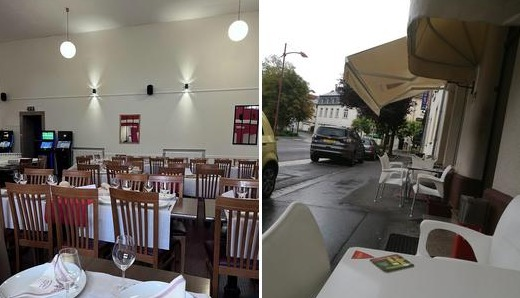
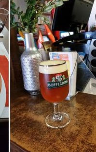

La tribune · vie du quartier
Plus qu'un resto,
le club-house du quartier
Café le matin, cantine le midi, tribune le soir. On y suit les matchs sur écran, on y écoute de la musique le week-end, et les grandes tablées portugaises ne se vident jamais avant la dernière chanson.
📺
Les matchs sur écranL'esprit Benfica, entre supporters.
Live
🎶
Musique le week-endAmbiance conviviale vendredi & samedi.
à confirmer
☕
Café & bar dès 9hOuvert aussi le dimanche.
7j/7

